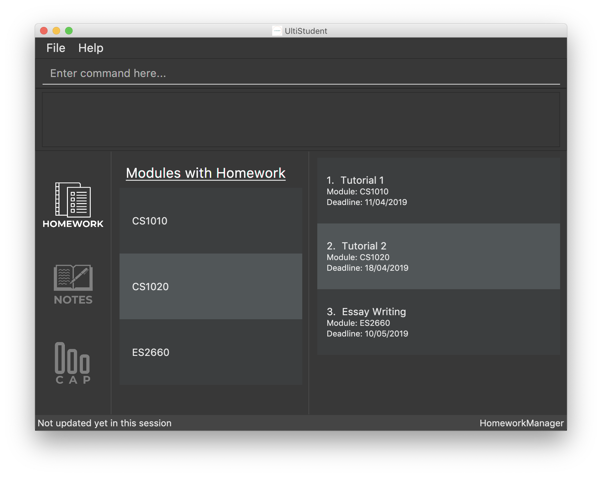

By: Team W09-1 Since: Feb 2019 Licence: MIT
1. Introduction
UltiStudent is for students who prefer to use a desktop app for managing their school activities. More importantly, it is optimized for students who prefer to work with a Command Line Interface (CLI) while still having the benefits of a Graphical User Interface (GUI). If you can type fast, it can not only help you to manage your homework but also serve as a timetable, CAP calculator and Notes keeping! Interested? Jump to the Section 2, “Quick Start” to get started. Enjoy!
2. Quick Start
-
Ensure you have Java version
9or later installed in your Computer. -
Download the latest
HomeworkManager.jarhere. -
Copy the file to the folder you want to use as the home folder for your UltiStudent.
-
Double-click the file to start the app. The GUI should appear in a few seconds.
 -
Type the command in the command box and press Enter to execute it.
e.g. typinghelpand pressing Enter will open the help window. -
Some example commands you can try:
-
list: lists all homework -
add: mc/CS2103T mn/Software Engineering hw/Tutorial 01 d/050319 Adds a homework “Tutorial 01” under CS2103T tab with the deadline on 05 March 2019 -
delete3: deletes the 3rd homework shown in the current list -
exit: exits the app
-
-
Refer to Section 3, “Features” for details of each command.
3. Features
UltiStudent consists of 3 key features to help you manage your student life: HomeworkManager, NotesManager, CapManager.
3.1. HomeworkManager
You can record and manage your homework here by adding, deleting, editing your progress.
3.2. NotesManager
You can record and manage your notes here.
3.3. CapManager
You can record and keep track of your Cumulative Aggregate Points (CAP) here by adding, deleting the grades you have received for modules you have taken and also project your expected CAP.
4. Commands
As UltiStudent contains many different commands and features, do refer to the command format below to help you better understand how to use each command to their best.
Command Format
-
Words in
UPPER_CASEare the parameters to be supplied by the user e.g. inadd mc/MODULECODE,MODULECODEis a parameter which can be used asadd c/CS2103T. -
All parameters must be supplied by users in this order:
add mc/MODULECODE mn/MODULENAME hw/HOMEWORK d/DEADLINE. Deadline format: DDMMYY *Items in square brackets are optional e.g.[p/PRIORITY], which is an optional field. Priority is set to low by default.
4.1. General Commands
The commands here are applicable throughout UltiStudent.
4.1.1. Viewing help : help
Opens up the help window.
Format: help
4.1.2. Listing entered commands : history
Retrieves the last 3 commands which has been entered into the system before history.
4.1.3. Undoing previous command : undo
Restores the UltiStudent to the state before the previous undoable command was executed.
Format: undo
|
Undoable commands: those commands that modify the UltiStudent’s content ( |
Examples:
-
delete 1
list
undo(reverses thedelete 1command) -
select 1
list
undo
Theundocommand fails as there are no undoable commands executed previously. -
delete 1
add mc/CS2101 mn/Effective Communication for Computing Professionals hw/Tutorial 1’(reverses the
`undoaddcommand)
undo(reverses thedelete 1command)
4.1.4. Redoing the previously undone command : redo
Reverses the most recent undo command.
Format: redo
Examples:
-
delete 1
undo(reverses thedelete 1command)
redo(reapplies thedelete 1command) -
delete 1
redo
Theredocommand fails as there are noundocommands executed previously.
4.1.5. Exiting the program : exit
Exits the program.
Format: exit
4.1.6. Saving the data
UltiStudent data are saved in the hard disk automatically after any command that changes the data.
There is no need to save manually.
4.2. Homework Manager
4.2.1. Adding a homework: add
Adds a new homework task to the UltiStudent
Format: add mc/MODULECODE mn/MODULENAME hw/HOMEWORK d/DEADLINE [p/PRIORITY]
| Priorities are low by default if not set, and acceptable values are low, normal, high. |
Examples:
-
add mc/CS2103T mn/Software Engineering hw/User Guide Draft 1 d/05032019 -
add mc/CS3230 mn/Data Structures and Algorithms II hw/Tutorial 3 d/07032019 p/high
4.2.2. Listing all homework: list
Shows a list of all homework in the UltiStudent.
Format: list
4.2.3. Editing a homework: edit
Edits an existing homework entry in the UltiStudent
Format: edit INDEX [mc/MODULECODE] [mn/MODULENAME] [hw/HOMEWORK] [d/DEADLINE] [p/PRIORITY]
Examples:
-
edit 1 p/high d/100319
Edits the priority and deadline of the 1st homework to behighand10 March 2019 -
edit 2 d/030319 p/
Edits the deadline of the 2nd homework and set the priority to low
4.2.4. Locating homework by keywords in hw/HOMEWORK parameter: find
Finds homework whose homework name contain any of the given keywords.
Format: find KEYWORD [MORE_KEYWORDS]
Examples:
-
find Draft
ReturnsPresentation Script DraftandUser Guide Draft -
find Tutorial Lecture Submission
Returns any homework having namesTutorial,Lecture, orSubmission
4.2.5. Deleting a homework: delete
Deletes the specified homework from the UltiStudent.
Format: delete INDEX
Examples:
-
list
delete 2
Deletes the 2nd homework in the UltiStudent. -
find Tutorial
delete 1
Deletes the 1st homework in the results of thefindcommand.
4.2.6. Selecting a homework: select
Selects the homework identified by the index number used in the displayed homework list.
Format: select INDEX
Examples:
-
list
select 2
Selects the 2nd homework in the UltiStudent. -
find Tutorial
select 1
Selects the 1st homework in the results of thefindcommand.
4.3. Notes Manager
4.3.1. Adding a note : addNote
Adds a new note to the Notes Manager
Format: addNote
| Tags can be used to indicate which year and semester was the module taken. |
Examples:
-
add mc/CS2103T g/A mcs/4 tag/Y2S2 -
add mc/CS2100 g/A+ mcs/4 tag/Y2S1
4.3.2. Listing all Notes: listNotes
Shows a list of all the notes in the Notes Manager.
Format: listNotes
4.3.3. Deleting a CAP entry: deleteNote
Deletes the specified note from the Notes Manager.
Format: deleteNote INDEX
Examples:
-
listNotes
delete 2
Deletes the 2nd note in the Note Manager.
4.4. CAP Manager
4.4.1. Adding a CAP entry: addCAPEntry
Adds a new CAP entry to the CAP Manager
Format: addCapEntry mc/MODULECODE g/MODULEGRADE mcs/MODULECREDITS [t/tag]
| Tags can be used to indicate which year and semester was the module taken. |
Examples:
-
add mc/CS2103T g/A mcs/4 tag/Y2S2 -
add mc/CS2100 g/A+ mcs/4 tag/Y2S1
4.4.2. Listing all CAP Entries: listCapEntry
Shows a list of all CAP entries in the CAP Manager.
Format: listCapEntry
4.4.3. Deleting a CAP entry: deleteCAPEntry
Deletes the specified CAP entry from the CAP Manager.
Format: deleteCapEntry INDEX
Examples:
-
listCapEntry
delete 2
Deletes the 2nd CAP Entry in the UltiStudent.
4.4.4. Editing a CAP Entry: editCapEntry
Edits an existing homework entry in the UltiStudent
Format: edit INDEX [mc/MODULECODE] [g/MODULEGRADE] [mcs/MODULECREDITS] [t/TAG]
Examples:
-
edit 1 g/A
Edits the module grade of the 1st module in CAP manager to beA -
edit 3 mc/CS2102 g/B+
Edits the module code of the 3rd homework and the grade the student got toB+.
4.4.5. Calculating your CAP : calculateCAP
Calculates your current CAP based on the CAP entries in CAP Manager
Format: calculateCAP
4.4.6. Indicating that you wish to SU a module: SU
SUs the CAP Entry
Format: SU INDEX
Examples:
-
listCapEntry
SU 1
Edits the module grade of the 1st module in CAP manager to beSorU.
5. FAQ
Q: How do I transfer my data to another Computer?
A: Install the app in the other computer and overwrite the empty data file it creates with the file that contains the data of your previous UltiStudent folder.
6. Command Summary
-
Add
add mc/MODULECODE mn/MODULENAME hw/HOMEWORK [p/PRIORITY]…
e.g.add mc/CS2103T mn/Software Engineering hw/Tutorial 3 p/high -
Delete :
delete INDEX
e.g.delete 2 -
Edit :
edit INDEX [mc/MODULECODE] [mn/MODULENAME] [hw/HOMEWORK] [d/DEADLINE] [p/PRIORITY]…
e.g.edit 2 d/030319 p/ -
Find :
find KEYWORD [MORE_KEYWORDS]
e.g.find Tutorial 3 -
List :
list -
Help :
help -
Select :
select INDEX
e.g.select 3 -
History :
history -
Undo :
undo -
Redo :
redo